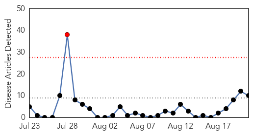

30 Day Trends
Web: 1 alerts, 0 warnings
Twitter: 2 alerts, 0 warnings
Top Articles:
- 0.999
- Ten new Riyadh MERS cases as hospital ED shuttered
- 0.999
- Saudi MERS infections soar ahead of Hajj pilgrimage
- 0.999
- Saudi MERS infections soar ahead of Haj
- 0.998
- MERS sickens six more in Riyadh outbreak
- 0.996
- WHO official coming to assess MERS outbreak
- 0.990
- Saudi MERS infections soar ahead of hajj
- 0.989
- Saudi Arabia registers 2 MERS death, 9 new cases --China Economic Net
- 0.986
- No camel slaughter during this Haj
- 0.955
- KBS World Radio
- 0.525
- Religious Affairs Minister sees off first batch of Indonesian haj pilgrims
Top Tweets:
-
No tweets found for Aug 21, 2015
Web/News Articles
Tweets